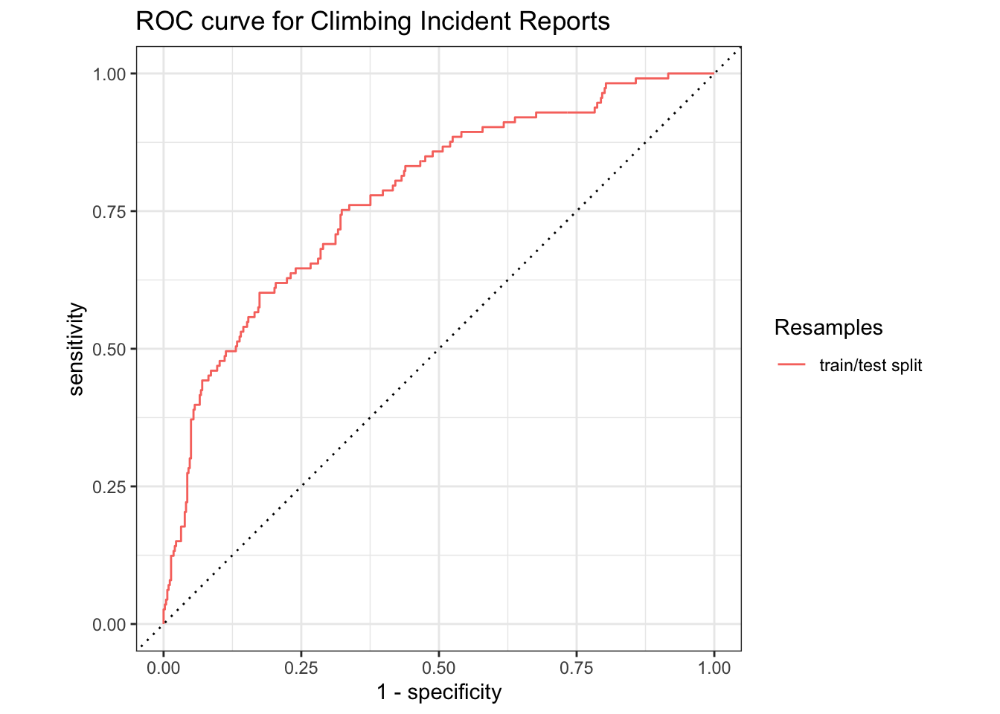
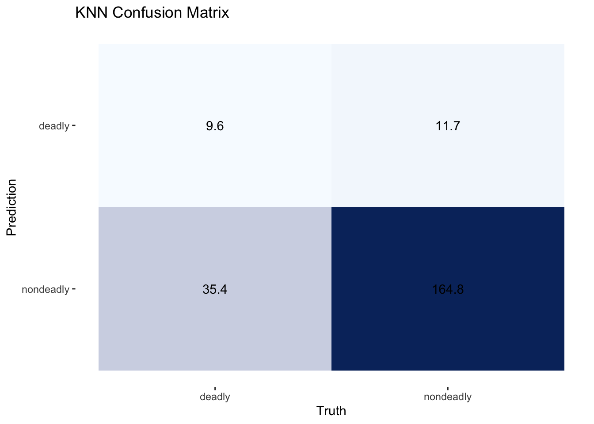

urlfile ="https://raw.githubusercontent.com/MaRo406/EDS-231-text-sentiment/main/data/climbing_reports_model_dat.csv"
incidents_df<-readr::read_csv(url(urlfile))Lab5_hw
Set up
Load libraries
Load data
20/80 test and training split
set.seed(321)
# 2 classes
incident2class <- incidents_df %>%
mutate(deadly = factor(if_else(
is.na(Deadly), "nondeadly", "deadly"
)))
# 20/80 split
incidents_split <- rsample::initial_split(incident2class, prop = 0.8, strata = deadly)
incidents_train <- training(incidents_split)
incidents_test <- testing(incidents_split)K-Nearest Neighbor
Identify the key hyperparameter(s) for your chosen algorithm. Briefly explain in plain language what the hyperparameter controls and why tuning it matters.
I am running K-Nearest Neighbor (KNN) for the incident data set. The key hyperparameter for KNN is the number of neighbors used to classify each observation (K). KNN predicts the classification for a value based on the majority class of the surrounding training observations. K represents the number of neighbors that determine how values will be classified. A small K makes the model sensitive to noise and can cause overfitting. Whereas, a large K smooths over the decision boundaries and can cause underfitting. Choosing the right K is critical to an accurate, predictive model.
For example, consider predicting a home’s value in Houston, TX. Using only the single nearest neighbor (K=1) risks being misled by outliers, such as a modest home next to a newly gentrified property. Conversely, averaging across all of Harris County (very large K) ignores meaningful local variation entirely. The optimal K lies somewhere between these extremes. Therefore, it is important to pick the correct K for the data set.
To pick a good K value, I will tune K using 10-fold cross validation and select the best hyperparameter for the data set. Then I will fit the final tuned model and evaluate it on the test set and access the accuracy and plot ROC and the confusion matrix.
Create Recipe
# Create Recicipe
incidents_rec <- recipe(deadly ~ Text,
data = incidents_train)
# Preprocessing
recipe <- incidents_rec |>
step_tokenize(Text) |>
step_tokenfilter(Text, max_tokens = 1000) |>
step_tfidf(Text)
recipe── Recipe ──────────────────────────────────────────────────────────────────────── Inputs Number of variables by roleoutcome: 1
predictor: 1── Operations • Tokenization for: Text• Text filtering for: Text• Term frequency-inverse document frequency with: TextTuning Hyper-parameter
Tune at least one hyperparameter using cross-validation and select a final value.
# Penalty-tuning-specification
knn_spec <- nearest_neighbor(neighbors = tune(), ) %>%
set_engine("kknn") %>%
set_mode("classification")
# Create Cross-Validation Folds
cv_folds <- vfold_cv(incidents_train, v = 10, strata = deadly)
# Hyper parameter - K neighbors
k_grid <- grid_regular(neighbors(range = c(1, 50)), # Used AI to know the proper KNN grid paramters
levels = 20)# Create a workflow to bundle recipe and model - updated workflow
knn_wf <- workflow() %>%
add_recipe(recipe) %>%
add_model(knn_spec)
# TUNE - Fit the model
set.seed(321)
tune_knn <- tune_grid( # tune_grid() fits a model at each of the HP values
knn_wf,
cv_folds,
grid = k_grid,
control = control_resamples(save_pred = T))
# Evaluate
chosen_acc <- tune_knn %>%
select_by_one_std_err(metric = "accuracy", neighbors)
chosen_acc# A tibble: 1 × 2
neighbors .config
<int> <chr>
1 47 pre0_mod19_post0Fit Tuned Model
Fit your final tuned model and evaluate it on the test set.
# Finalize the workflow with best regularization penalty.
final_knn <- finalize_workflow(knn_wf, chosen_acc)
# Fit to the training data.
fitted_knn <- fit(final_knn, incidents_train)# Fit to the test data
last_fit(final_knn, incidents_split) %>%
collect_metrics()# A tibble: 3 × 4
.metric .estimator .estimate .config
<chr> <chr> <dbl> <chr>
1 accuracy binary 0.825 pre0_mod0_post0
2 roc_auc binary 0.777 pre0_mod0_post0
3 brier_class binary 0.162 pre0_mod0_post0# Get Predictions
predictions <- last_fit(final_knn, incidents_split) %>%
collect_predictions()
head(predictions)# A tibble: 6 × 7
.pred_class .pred_deadly .pred_nondeadly id deadly .row .config
<fct> <dbl> <dbl> <chr> <fct> <int> <chr>
1 nondeadly 0.386 0.614 train/test split nonde… 9 pre0_m…
2 nondeadly 0.337 0.663 train/test split nonde… 16 pre0_m…
3 nondeadly 0.447 0.553 train/test split nonde… 19 pre0_m…
4 nondeadly 0.498 0.502 train/test split deadly 21 pre0_m…
5 nondeadly 0.0734 0.927 train/test split nonde… 23 pre0_m…
6 nondeadly 0.295 0.705 train/test split nonde… 26 pre0_m…Plots: ROC and Confusion Matrix
Create an ROC plot
# ROC
predictions %>%
group_by(id) %>%
roc_curve(truth = deadly, .pred_deadly) %>%
autoplot() +
labs(
color = "Resamples",
title = "ROC curve for Climbing Incident Reports")
Compare its accuracy and ROC AUC to the Naive Bayes and Lasso models from the demo. Which model performs best, and why do you think that is?
The initial sharp rise illustrates there are low false positive rates and the model is catching the deadly incidents. Between a false positive rate of 0.25–0.75 (the x axis), the curve flattens showing there are more false positives (non-deadly reports incorrectly predicted as deadly). Overall, for KNN the area under the curve is a alright but not great discriminator between classes.
Comparatively, the Lasso model did the best on both accuracy and the ROC AUC. Lasso regulation zeros out irrelevant terms. Text data is very scattered and high-dimensional. Regulatory models (like lasso and ridge) are perfect for high-dimensional data sets (good timing - we just had a reading about high-dimensional data sets and regulatory models this weekend in machine learning). Naive Bayes performance is in the middle. I think this is due to Naive Bayes assumption that features are independent. the model assumes all words are independent of each other and uncoordinated which is not necessarily true. We learned today in Word Embedding “words occurring in similar context tend to have similar meaning” showing word occurrence can be correlated and breaking the model assumption. KNN performed the worst. KNN classifies on distance between observations. In high-dimensional Latent Dirichlet Allocation, distances are nearly meaningless, making KNN a poor predicting model for this data set.
Examine the confusion matrix for your tuned model.
# Confusion Matrix
tune_knn %>%
conf_mat_resampled(parameters = chosen_acc, # pass the best parameters (AI told me this)
tidy = FALSE) %>%
autoplot(type = "heatmap") +
scale_fill_gradient(low = "#f7fbff", high = "#08306b") +
labs(title = "KNN Confusion Matrix")Scale for fill is already present.
Adding another scale for fill, which will replace the existing scale.
What does the confusion matrix tell you about how the model is handling the minority class? Is overall accuracy a good summary metric here? What would you prioritize — minimizing false negatives (missed fatalities) or false positives (false alarms) — and why?
If deadly = positive & nondeadly = negative:
True Positives: 11.2 - deadly incidents correctly flagged as deadly.
True Negatives: 163.9 - non-deadly correctly classified as non-deadly.
False Positives: 33.8 - non-deadly reports incorrectly predicted as deadly.
False Negatives: 12.6 - deadly incidents incorrectly predicted as non-deadly.
The data set has class imbalance with about 176 nondeadly and 45 deadly incidents. The KNN model is naturally classifying values as the majority class (“nondeadly”). Of the ~45 actual deadly incidents, the model only catches 11.2, missing 33.8. That’s roughly a 25% recall on the deadly class. The model is heavily biased toward predicting “nondeadly” as its the majority class. The model accuracy of about 80% is due the model predicting “nondeadly” most of the time. Here, false negatives are the bigger problem. Missing deadly incidents (FN = 33.8) is more consequential than a false alarm (FP = 12.6). Missing lots of fatalities is dangerous, regardless of overall accuracy.